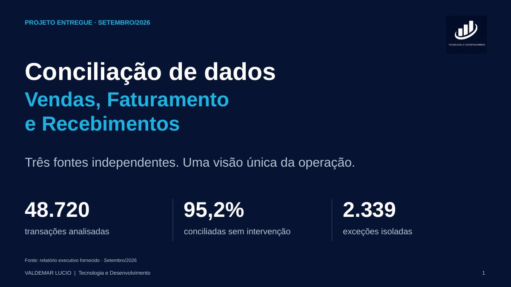
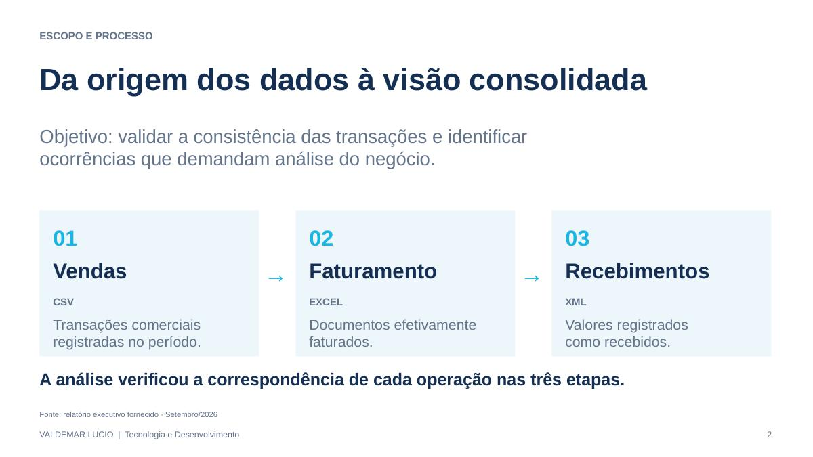
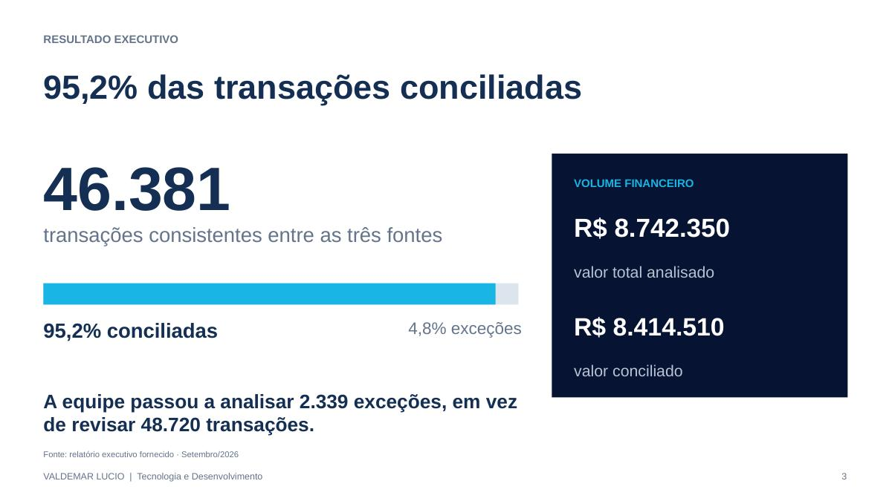
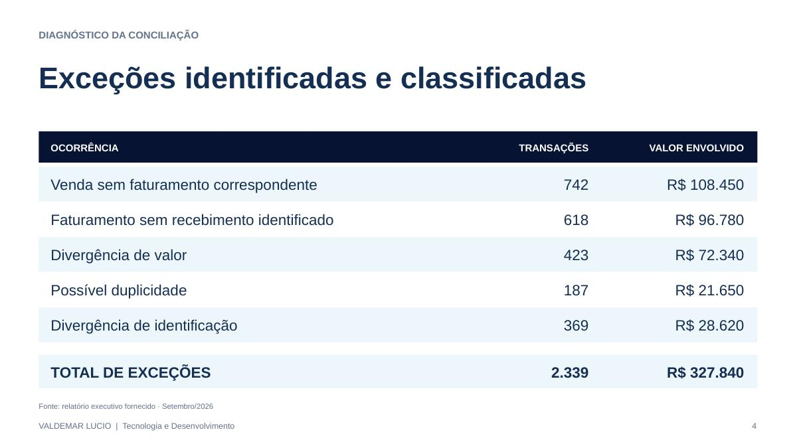
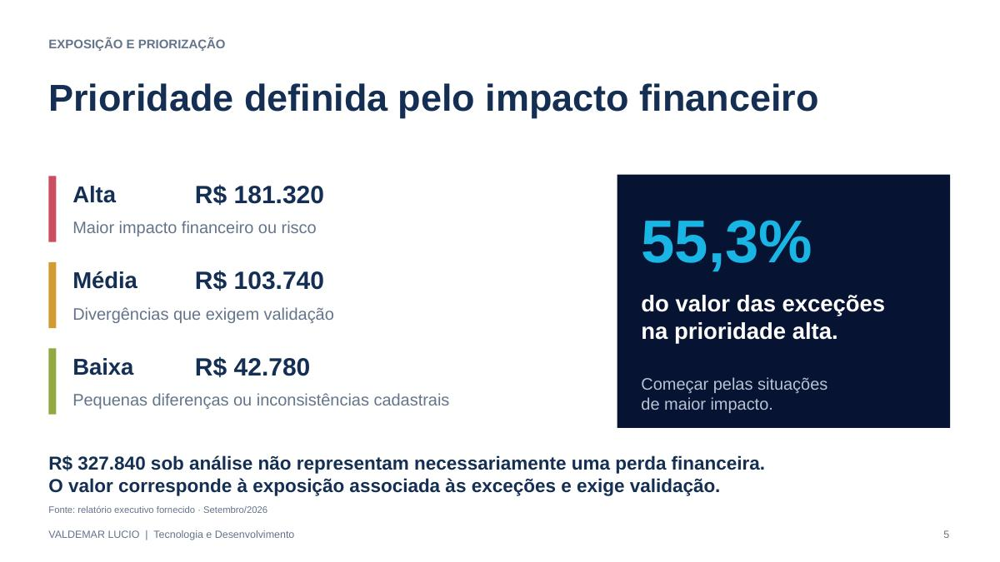
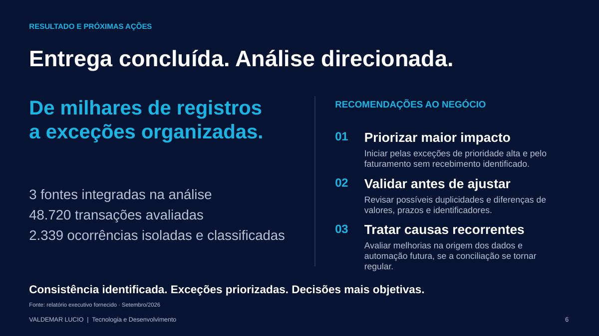

01
Visão geral da conciliação
48.720 transações analisadas em três fontes, com 95,2% conciliadas e 2.339 exceções isoladas.

CONCILIAÇÃO DE DADOS SOB DEMANDA
Você tem duas, três ou várias bases de dados que deveriam apresentar os mesmos resultados, mas os números simplesmente não batem?
Talvez seja conciliação bancária, fechamento financeiro, uma auditoria, uma conciliação de vendas, recebíveis, taxas, estoque ou uma validação urgente entre diferentes sistemas.
E existe um problema adicional:
Não é o momento de iniciar um longo projeto de desenvolvimento ou implementar uma nova plataforma. Você precisa comparar os dados, localizar as divergências e entender onde está o problema dentro do prazo disponível.
É exatamente para isso que oferecemos o serviço de Conciliação, Auditoria e Validação de Dados Sob Demanda.
Solicitar orçamentoTECNOLOGIA E CAPACIDADE DE PROCESSAMENTO
Utilizamos Inteligência Artificial, Python, SQL e ferramentas de processamento de dados de alta capacidade para analisar informações de diferentes sistemas, bancos de dados e arquivos, incluindo planilhas, CSV e XML.
Combinamos automação, cruzamento de registros e regras de validação para identificar divergências, duplicidades e inconsistências. Nossa abordagem permite trabalhar com grandes volumes de dados, inclusive milhões de registros, conforme as características e a complexidade de cada projeto.
A Inteligência Artificial pode apoiar a identificação e classificação de anomalias, com resultados verificados por critérios de conciliação e regras de negócio. Ao final, transformamos dados complexos em informações claras e acionáveis.
Pacotes de conciliação a partir de
R$ 120
Orçamento definido conforme as fontes, o volume de registros e a complexidade da análise.
Prazo estimado de entrega
De 1 a 24 horas
Atendimento sob demanda para análises e conciliações com prazo reduzido.
* Os valores e prazos dependem da complexidade do serviço, do volume de dados e das análises em andamento. A disponibilidade e o prazo final serão confirmados após a avaliação da necessidade.
Informe quais fontes precisam ser conciliadas, o volume aproximado de registros e o prazo desejado. Não envie dados financeiros confidenciais pelo WhatsApp; combinaremos um meio seguro de transferência quando necessário.
Iniciar conversa no WhatsAppAtendimento comercial via WhatsApp: (11) 96246-5358.
EXEMPLO DE ENTREGA
Do cruzamento entre diferentes fontes até um relatório executivo com divergências classificadas, valores envolvidos e recomendações práticas. As imagens a seguir mostram um exemplo de apresentação da conciliação de Vendas, Faturamento e Recebimentos.
48.720 transações analisadas em três fontes, com 95,2% conciliadas e 2.339 exceções isoladas.

Vendas em CSV, faturamento em Excel e recebimentos em XML, relacionados em uma visão única.

Indicadores de consistência e volume financeiro, destacando as transações conciliadas e o conjunto que exige análise.

Classificação das divergências por tipo, quantidade de transações e valores associados.

Organização das exceções em prioridades alta, média e baixa para orientar a análise.

Resumo das ocorrências e recomendações para validação, correção e prevenção de recorrências.

Entregáveis: relatório executivo em PDF com indicadores, divergências e recomendações; arquivo CSV ou Excel com a demonstração das diferenças linha a linha, incluindo a identificação das transações e as divergências encontradas. Valores associados às exceções indicam exposição para análise e não representam necessariamente perdas financeiras.